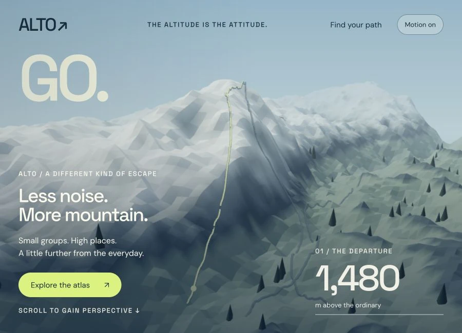

ALTO Expeditions
A change in altitude.
An alpine journey that climbs through a mountain landscape before opening into an interactive route atlas.
Landscape storytelling · Camera choreography · Route selection
Try this Scroll through the ascent, then choose a route to reveal its contour path, ascent profile and field notes.